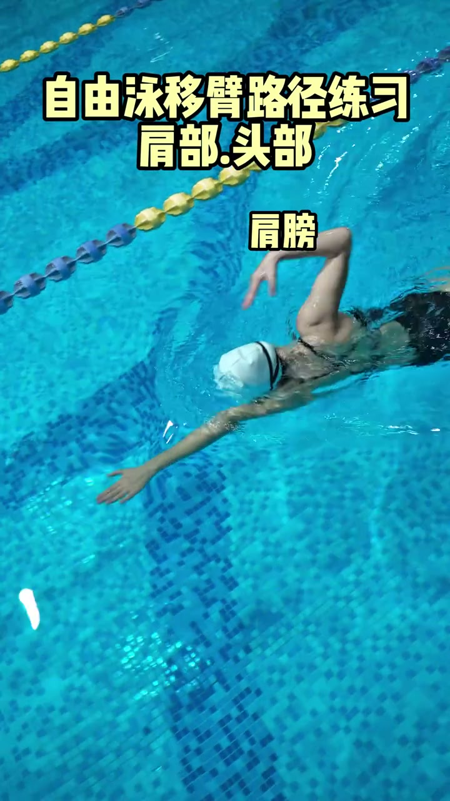
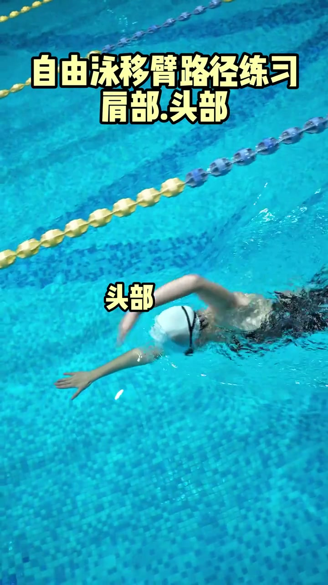
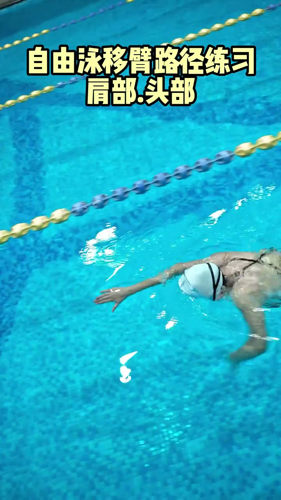
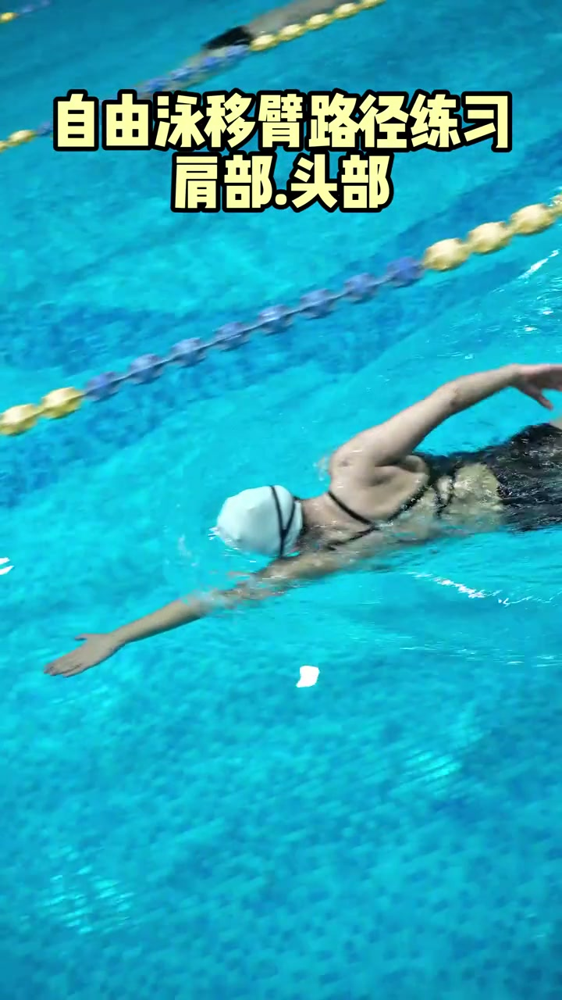

内容要点
本视频全程无语音解说，以下是基于画面内容与自由泳移肩技术原理的知识归纳。
知识结构
[00:00→00:04]
站立准备姿势
演示者自然站立，双臂前伸，展示肩部放松的起始姿态，为后续肩胛骨独立运动做准备。
[00:04→00:09]
肩胛骨前伸与后缩
上肢保持不动的前提下，肩胛骨向前送出再向后回收，模拟自由泳划水时肩部的送肩与回位动作。这是移肩练习的核心：学会用肩胛骨而非手臂肌肉发力。
[00:09→00:13]
连贯动作循环
将前伸和后缩动作连贯起来，形成流畅的肩部移动循环，演示如何在实际游进中保持肩部灵活而非僵硬固定。
核心结论
自由泳划手的僵硬感往往源于肩胛骨不会独立运动。移肩练习的本质是训练肩胛骨的前伸（送肩）与后缩能力，让手臂的伸展和回位由肩胛骨主导，而非单纯依赖肩关节。
图文实录
注意：本视频全程无口播旁白，所有文字描述基于画面观察和自由泳移肩技术知识补充。
第一阶段：站立起始姿势
00:00 – 00:04
演示者站在陆地上，身体直立，双臂自然前伸。这个起始姿势模拟了自由泳手臂入水后的前伸阶段。关键点是肩部保持放松，不耸肩、不压肩，为后续肩胛骨运动做好准备。

[00:01] 陆上移肩练习的站立起始姿势，双臂前伸准备肩胛骨运动
The standing start of the on-land shoulder-shift drill, arms extended ready for scapular movement
第二阶段：肩胛骨前伸与后缩
00:04 – 00:09
演示者在手臂保持不动的前提下，肩胛骨向前送出，胸椎段微微前引，模拟水中送肩的动作。随后肩胛骨向后回收，回到中立位置。这个练习的核心是让肩胛骨学会独立于手臂运动——很多人游泳时肩膀是"焊死"的，手臂动多少、肩膀就动多少，导致划水行程短、抓水无力。

[00:04] 肩胛骨向前送出：手臂保持不动，仅用肩胛骨带动肩膀前移
Scapula pushed forward: the arm stays still while the scapula alone moves the shoulder ahead
第三阶段：肩胛骨后缩回位
00:09 – 00:13
肩胛骨从前伸位置向后缩回，完成一个完整的移肩周期。演示者将前伸和后缩连成一个流畅的循环动作。这个动作对应水中自由泳的"送肩 → 抓水 → 拉水 → 回位"节奏，在陆上练习熟练后，下水时会感受到手臂伸得更远、肩膀更灵活。

[00:09] 肩胛骨后缩回位，完成一个完整的移肩周期
The scapula retracts back into place, completing one full shoulder-shift cycle

[00:10] 肩部回到自然位置，动作循环结束
The shoulder returns to its natural position, closing the move cycle